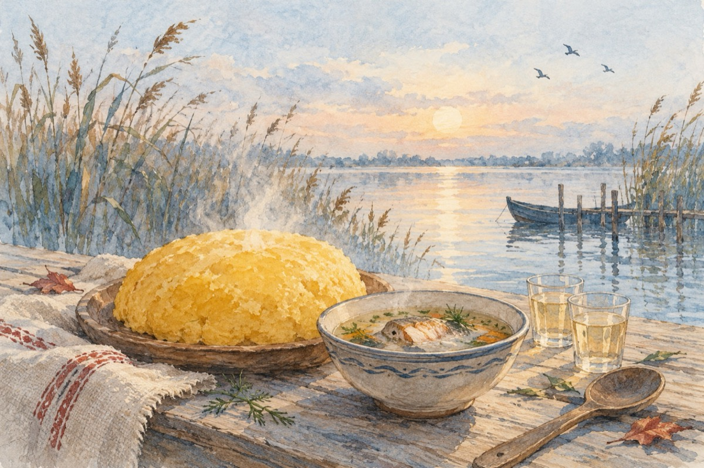

Și toamna
Și toamna a venit iar printre noi
Cu roadele băgate prin cămări
Puterea ursului ce hibernează în butoi
Și gustul aromat de cârnăciori.
Ne adunăm cu toții la un pahar de vorbă
Cu grija de pe câmpuri adunată
În deltă ne așteaptă nelipsita ciorbă
Și mămăliga mare cât o roată.
Sfârâie peștele și pastrama pipărată
Paharele se-ntrec în plinătate
Și saramura peștelui din plin gustată
Noi să ciocnim cu toții un dram de sănătate!
Vasile Groza